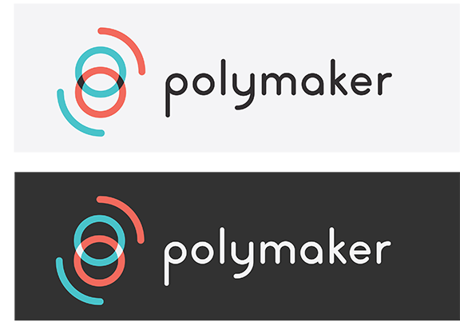
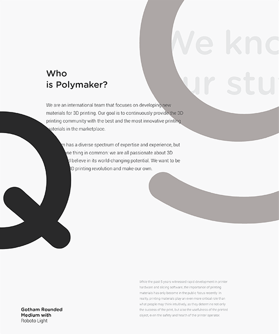
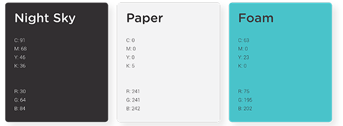
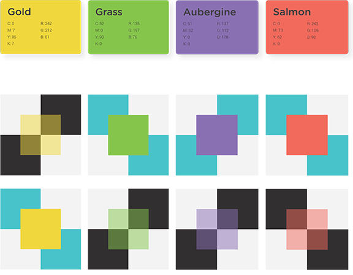
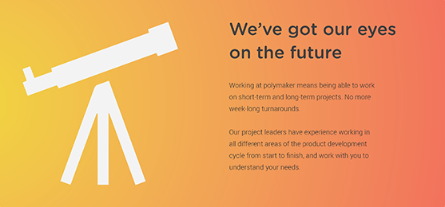
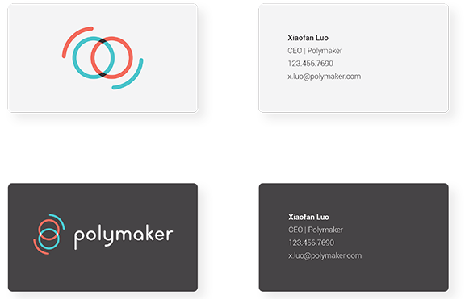
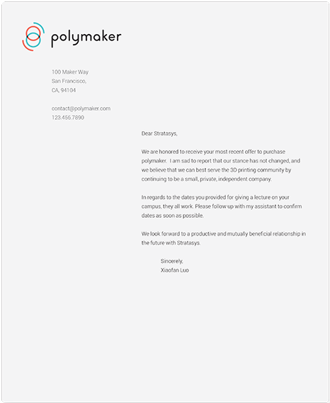

Ryan is a designer.
He can build
In the summer of 2014 I was hired to re-design the branding for polymaker. Although we're still in the early phases of implementing, here is what I arrived at.
First we had to come to an understanding of who our customer is.

The final iteration of the logo is an abstraction of a filament spool. The logo needed to feel bold, inviting, and warm.
This is an alternate logo geometry that can be used for t-shirts, etc.

For the typography, I specified Gotham Rounded and Roboto, a pairing that scales to different sizes well and balances professionalism with character.

The three main colors I specified, Night Sky, Paper, and Foam, are very easy to adapt to multiple different situations.

I also provided a set of "experimental" colors which polymaker designers can use to change things up. These colors are guaranteed to resonate well with Night Sky, Paper, and Foam.



Then, I provided polymaker designers with a number of examples of how to implement the guidelines, from online ads, to letterheads and business cards.
In asian markets, it is common to have a cute animal as a brand ambassador. That's why I created Shelly, a cute snake that makes an appearance on our 404 pages, and customer service emails, etc.
It was a real pleasure working with polymaker on this rebranding effort.